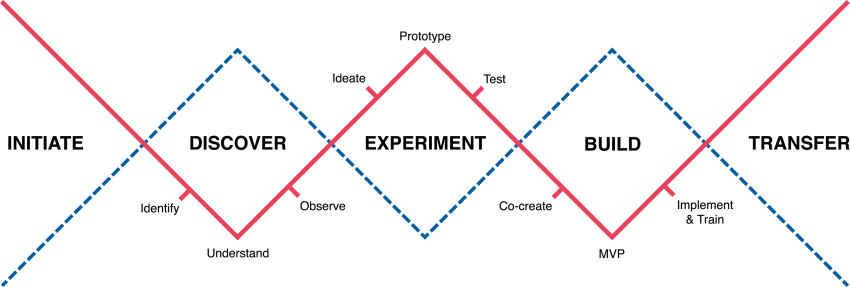

our heart beats for
CO-CREATION, CO-INNOVATION, RAPID SERVICE PROTOTYPING, DESIGN THINKING, DIGITAL
By offering products, we can solve many problems. But what if we think beyond the product? What if we apply new technologies and create “products” within their context of usage? Turning “products” into holistic solutions is the great adventure of our time.
To explore this new frontier beyond the horizon, we provide an agile start-up-like infrastructure, methodology, and spirit for innovations. Discover a world in which users and customers join in to create solutions or new business models to better fit their needs. Together, we are contributing to the future of medTech.
co-innovation portfolio
how we work
OUR APPROACH AND OPERATING MODEL
There is no innovation without failure. Failure is learning and part to develop new ideas and solutions.
We value failure, because every attempt brings us closer to our goal.
What we also care about are users, healthcare professionals and patients. It is our goal to improve their daily life and work. Thus, we invite them to share their opinions, ideas and needs for developing solutions together.
INITIATE
We want to inspire you to find great ideas for sales support tools, services, solutions and business models. This might happen in our workshops, events or during dedicated call for projects. We foster the spirit to act as an entrepreneur in the own company.
DISCOVER
We identify and evaluate internal and external ideas for beyond-the-product solutions. If we identify that there is a strategic fit and entrepreneurial spirit, we work together to create a first prototype. We listen very early and carefully to our customer’s voices. We also encourage ourselves to reject ideas. We believein “fail early, fail cheap”.
EXPERIMENT
Services and digital innovations are different to classic product development – this is also true in healthcare. Deep knowledge of customer processes, problems and pain points gives us the possibility to develop advanced solutions for the healthcare community. We use services and digital technology to create a future hospital world that is safer, more intelligent, faster, cost-effective, and always focused on the patient outcome. To create this world we experiment with prototypes in constant iterative cycles with users and customers.
BUILD
We only build to a minimal viable product level, taking what has survived the previous stages. We strongly believe that “fast” prototypes at a sufficient functionality win over “perfect” at lengthy timelines. Our experience tells us that agility can only be achieved by testing, iterating and discussing over and over. Our close interface to regulatory and legal experts help to make the right decisions at the right time.
TRANSFER
Our aim is to turn inventions into innovations. Therefore we welcome every idea and minimal viable product we have created – but our mission is to allow for scalability into the healthcare community. With the transfer phase we give our global customer base access to ideas once developed in werk_39. Our experience has shown that sales and operations are the backbone to scale. Therefore we involve and integrate our corporate and local teams at the earliest possible phase.
CULTURE
At werk_39 we rather ask for forgiveness than for permission. We have the privilege to build something new with full management support. They trust in us and our concept, and we want to pay back to our mothership by delivering business-relevant beyond-the-product innovation and cultural impact.
your career in medTech
HELLO UX-DESIGNERS, DATA SCIENTISTS, DESIGN THINKERS, AND SOFTWARE ARCHITECTS
To all unconvential thinkers, creative makers, and full-blown developers. Your next career opportunity lies right in the middle of the medTech Valley.
A place between tradition and innovation, with cozy countrysides for fun and family happiness as well as top-notch medTech known around the world. Join us to create the future of healthcare.
We welcome digital savvy students, engineers and people who want to make and shake.
results
OUR MEDTECH INNOVATION BLOG FOR LATEST NEWS, EVENTS, AND PROJECTS
fishbowl discussion
WHAT IS FISHBOWL?
A fishbowl discussion is a form of conversational exchange that can be used when discussing topics within groups. On the medtech_shakers last week, we introduced und held a fishbowl session for our customers and B.Braun staff members. At the beginning of the session, they saw a short video clip. In the video, we listed and explained four important factors in a fishbowl discussion. After receiving all the essential information from the video, they were able to try this method out.
test news2
.................
test news3
.................